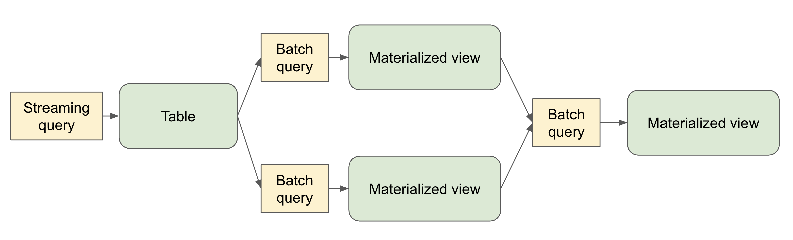

Spark Declarative Pipelines Programming Guide
- What is Spark Declarative Pipelines (SDP)?
- Key Concepts
- The
spark-pipelinesCommand Line Interface - Programming with SDP in Python
- Programming with SDP in SQL
- Important Considerations
What is Spark Declarative Pipelines (SDP)?
Spark Declarative Pipelines (SDP) is a declarative framework for building reliable, maintainable, and testable data pipelines on Spark. SDP simplifies ETL development by allowing you to focus on the transformations you want to apply to your data, rather than the mechanics of pipeline execution.
SDP is designed for both batch and streaming data processing, supporting common use cases such as:
- Data ingestion from cloud storage (Amazon S3, Azure ADLS Gen2, Google Cloud Storage)
- Data ingestion from message buses (Apache Kafka, Amazon Kinesis, Google Pub/Sub, Azure EventHub)
- Incremental batch and streaming transformations
The key advantage of SDP is its declarative approach - you define what tables should exist and what their contents should be, and SDP handles the orchestration, compute management, and error handling automatically.

Key Concepts
Flows
A flow is the foundational data processing concept in SDP which supports both streaming and batch semantics. A flow reads data from a source, applies user-defined processing logic, and writes the result into a target dataset.
For example, when you author a query like:
CREATE STREAMING TABLE target_table AS
SELECT * FROM STREAM source_table
SDP creates the table named target_table along with a flow that reads new data from source_table and writes it to target_table.
Datasets
A dataset is queryable object that’s the output of one of more flows within a pipeline. Flows in the pipeline can also read from datasets produced in the pipeline.
- Streaming Table – a definition of a table and one or more streaming flows written into it. Streaming tables support incremental processing of data, allowing you to process only new data as it arrives.
- Materialized View – is a view that is precomputed into a table. A materialized view always has exactly one batch flow writing to it.
- Temporary View – a view that is scoped to an execution of the pipeline. It can be referenced from flows within the pipeline. It’s useful for encapsulating transformations and intermediate logical entities that multiple other elements of the pipeline depend on.
Pipelines
A pipeline is the primary unit of development and execution in SDP. A pipeline can contain one or more flows, streaming tables, and materialized views. While your pipeline runs, it analyzes the dependencies of your defined objects and orchestrates their order of execution and parallelization automatically.
Pipeline Projects
A pipeline project is a set of source files that contain code that define the datasets and flows that make up a pipeline. These source files can be .py or .sql files.
A YAML-formatted pipeline spec file contains the top-level configuration for the pipeline project. It supports the following fields:
- definitions (Required) - Paths where definition files can be found.
- database (Optional) - The default target database for pipeline outputs.
- catalog (Optional) - The default target catalog for pipeline outputs.
- configuration (Optional) - Map of Spark configuration properties.
An example pipeline spec file:
name: my_pipeline
definitions:
- glob:
include: transformations/**/*.py
- glob:
include: transformations/**/*.sql
catalog: my_catalog
database: my_db
configuration:
spark.sql.shuffle.partitions: "1000"
It’s conventional to name pipeline spec files pipeline.yml.
The spark-pipelines init command, described below, makes it easy to generate a pipeline project with default configuration and directory structure.
The spark-pipelines Command Line Interface
The spark-pipelines command line interface (CLI) is the primary way to execute a pipeline. It also contains an init subcommand for generating a pipeline project and a dry-run subcommand for validating a pipeline.
spark-pipelines is built on top of spark-submit, meaning that it supports all cluster managers supported by spark-submit. It supports all spark-submit arguments except for --class.
spark-pipelines init
spark-pipelines init --name my_pipeline generates a simple pipeline project, inside a directory named “my_pipeline”, including a spec file and example definitions.
spark-pipelines run
spark-pipelines run launches an execution of a pipeline and monitors its progress until it completes. The --spec parameter allows selecting the pipeline spec file. If not provided, the CLI will look in the current directory and parent directories for a file named pipeline.yml or pipeline.yaml.
spark-pipelines dry-run
spark-pipelines dry-run launches an execution of a pipeline that doesn’t write or read any data, but catches many kinds of errors that would be caught if the pipeline were to actually run. E.g.
- Syntax errors – e.g. invalid Python or SQL code
- Analysis errors – e.g. selecting from a table that doesn’t exist or selecting a column that doesn’t exist
- Graph validation errors - e.g. cyclic dependencies
Programming with SDP in Python
SDP Python functions are defined in the pyspark.pipelines module. Your pipelines implemented with the Python API must import this module. It’s common to alias the module to dp to limit the number of characters you need to type when using its APIs.
from pyspark import pipelines as dp
Creating a Materialized View with Python
The @dp.materialized_view decorator tells SDP to create a materialized view based on the results returned by a function that performs a batch read:
from pyspark import pipelines as dp
@dp.materialized_view
def basic_mv():
return spark.table("samples.nyctaxi.trips")
Optionally, you can specify the table name using the name argument:
from pyspark import pipelines as dp
@dp.materialized_view(name="trips_mv")
def basic_mv():
return spark.table("samples.nyctaxi.trips")
Creating a Temporary View with Python
The @dp.temporary_view decorator tells SDP to create a temporary view based on the results returned by a function that performs a batch read:
from pyspark import pipelines as dp
@dp.temporary_view
def basic_tv():
return spark.table("samples.nyctaxi.trips")
This temporary view can be read by other queries within the pipeline, but can’t be read outside the scope of the pipeline.
Creating a Streaming Table with Python
Similarly, you can create a streaming table by using the @dp.table decorator with a function that performs a streaming read:
from pyspark import pipelines as dp
@dp.table
def basic_st():
return spark.readStream.table("samples.nyctaxi.trips")
Loading Data from a Streaming Source
SDP supports loading data from all formats supported by Spark. For example, you can create a streaming table whose query reads from a Kafka topic:
from pyspark import pipelines as dp
@dp.table
def ingestion_st():
return (
spark.readStream.format("kafka")
.option("kafka.bootstrap.servers", "localhost:9092")
.option("subscribe", "orders")
.load()
)
For batch reads:
from pyspark import pipelines as dp
@dp.materialized_view
def batch_mv():
return spark.read.format("json").load("/datasets/retail-org/sales_orders")
Querying Tables Defined in Your Pipeline
You can reference other tables defined in your pipeline in the same way you’d reference tables defined outside your pipeline:
from pyspark import pipelines as dp
from pyspark.sql.functions import col
@dp.table
def orders():
return (
spark.readStream.format("kafka")
.option("kafka.bootstrap.servers", "localhost:9092")
.option("subscribe", "orders")
.load()
)
@dp.materialized_view
def customers():
return spark.read.format("csv").option("header", True).load("/datasets/retail-org/customers")
@dp.materialized_view
def customer_orders():
return (spark.table("orders")
.join(spark.table("customers"), "customer_id")
.select("customer_id",
"order_number",
"state",
col("order_datetime").cast("int").cast("timestamp").cast("date").alias("order_date"),
)
)
@dp.materialized_view
def daily_orders_by_state():
return (spark.table("customer_orders")
.groupBy("state", "order_date")
.count().withColumnRenamed("count", "order_count")
)
Creating Tables in a For Loop
You can use Python for loops to create multiple tables programmatically:
from pyspark import pipelines as dp
from pyspark.sql.functions import collect_list, col
@dp.temporary_view()
def customer_orders():
orders = spark.table("samples.tpch.orders")
customer = spark.table("samples.tpch.customer")
return (orders.join(customer, orders.o_custkey == customer.c_custkey)
.select(
col("c_custkey").alias("custkey"),
col("c_name").alias("name"),
col("c_nationkey").alias("nationkey"),
col("c_phone").alias("phone"),
col("o_orderkey").alias("orderkey"),
col("o_orderstatus").alias("orderstatus"),
col("o_totalprice").alias("totalprice"),
col("o_orderdate").alias("orderdate"))
)
@dp.temporary_view()
def nation_region():
nation = spark.table("samples.tpch.nation")
region = spark.table("samples.tpch.region")
return (nation.join(region, nation.n_regionkey == region.r_regionkey)
.select(
col("n_name").alias("nation"),
col("r_name").alias("region"),
col("n_nationkey").alias("nationkey")
)
)
# Extract region names from region table
region_list = spark.table("samples.tpch.region").select(collect_list("r_name")).collect()[0][0]
# Iterate through region names to create new region-specific materialized views
for region in region_list:
@dp.table(name=f"{region.lower().replace(' ', '_')}_customer_orders")
def regional_customer_orders(region_filter=region):
customer_orders = spark.table("customer_orders")
nation_region = spark.table("nation_region")
return (customer_orders.join(nation_region, customer_orders.nationkey == nation_region.nationkey)
.select(
col("custkey"),
col("name"),
col("phone"),
col("nation"),
col("region"),
col("orderkey"),
col("orderstatus"),
col("totalprice"),
col("orderdate")
).filter(f"region = '{region_filter}'")
)
Using Multiple Flows to Write to a Single Target
You can create multiple flows that append data to the same target:
from pyspark import pipelines as dp
# create a streaming table
dp.create_streaming_table("customers_us")
# add the first append flow
@dp.append_flow(target = "customers_us")
def append1():
return spark.readStream.table("customers_us_west")
# add the second append flow
@dp.append_flow(target = "customers_us")
def append2():
return spark.readStream.table("customers_us_east")
Programming with SDP in SQL
Creating a Materialized View with SQL
The basic syntax for creating a materialized view with SQL is:
CREATE MATERIALIZED VIEW basic_mv
AS SELECT * FROM samples.nyctaxi.trips;
Creating a Temporary View with SQL
The basic syntax for creating a temporary view with SQL is:
CREATE TEMPORARY VIEW basic_tv
AS SELECT * FROM samples.nyctaxi.trips;
Creating a Streaming Table with SQL
When creating a streaming table, use the STREAM keyword to indicate streaming semantics for the source:
CREATE STREAMING TABLE basic_st
AS SELECT * FROM STREAM samples.nyctaxi.trips;
Querying Tables Defined in Your Pipeline
You can reference other tables defined in your pipeline:
CREATE STREAMING TABLE orders
AS SELECT * FROM STREAM orders_source;
CREATE MATERIALIZED VIEW customers
AS SELECT * FROM customers_source;
CREATE MATERIALIZED VIEW customer_orders
AS SELECT
c.customer_id,
o.order_number,
c.state,
date(timestamp(int(o.order_datetime))) order_date
FROM orders o
INNER JOIN customers c
ON o.customer_id = c.customer_id;
CREATE MATERIALIZED VIEW daily_orders_by_state
AS SELECT state, order_date, count(*) order_count
FROM customer_orders
GROUP BY state, order_date;
Using Multiple Flows to Write to a Single Target
You can create multiple flows that append data to the same target:
-- create a streaming table
CREATE STREAMING TABLE customers_us;
-- add the first append flow
CREATE FLOW append1
AS INSERT INTO customers_us
SELECT * FROM STREAM(customers_us_west);
-- add the second append flow
CREATE FLOW append2
AS INSERT INTO customers_us
SELECT * FROM STREAM(customers_us_east);
Important Considerations
Python Considerations
- SDP evaluates the code that defines a pipeline multiple times during planning and pipeline runs. Python functions that define datasets should include only the code required to define the table or view.
- The function used to define a dataset must return a Spark DataFrame.
- Never use methods that save or write to files or tables as part of your SDP dataset code.
Examples of Apache Spark operations that should never be used in SDP code:
collect()count()toPandas()save()saveAsTable()start()toTable()
SQL Considerations
- The
PIVOTclause is not supported in SDP SQL. - When using the
forloop pattern to define datasets in Python, ensure that the list of values passed to theforloop is always additive.